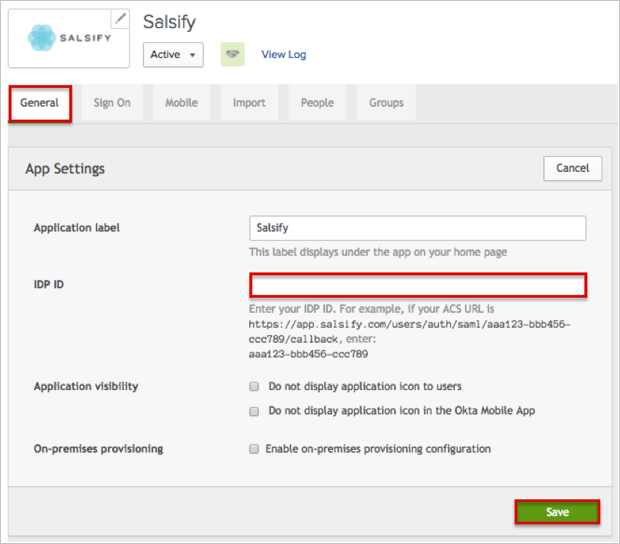
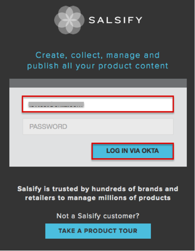

Send an email to Salsify Support and request that they enable SAML 2.0 for your account.
Attach the following:
IDP SSO URL: Copy and paste the following:
Sign into the Okta Admin Dashboard to generate this variable.
IDP SHA1 Certificate Fingerprint: Copy and paste the following:
Sign into the Okta Admin Dashboard to generate this variable.
Salsify Support will process your request and then provide you with an IDP ID.
In Okta, select the General tab for the Salsify app, then click Edit.
Enter the IDP ID provided to you into the corresponding field.

Done!
Notes:
IdP-initiated flows and SP-initiated flows are supported.
Just In Time (JIT) provisioning is not supported.
For SP-initiated flows:
